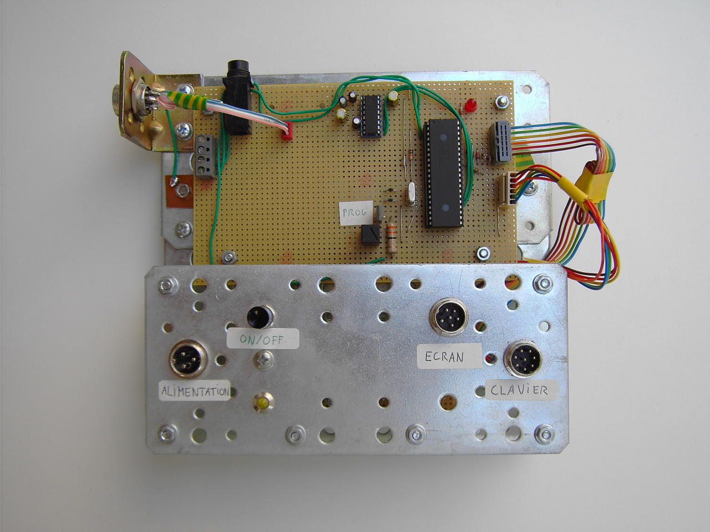
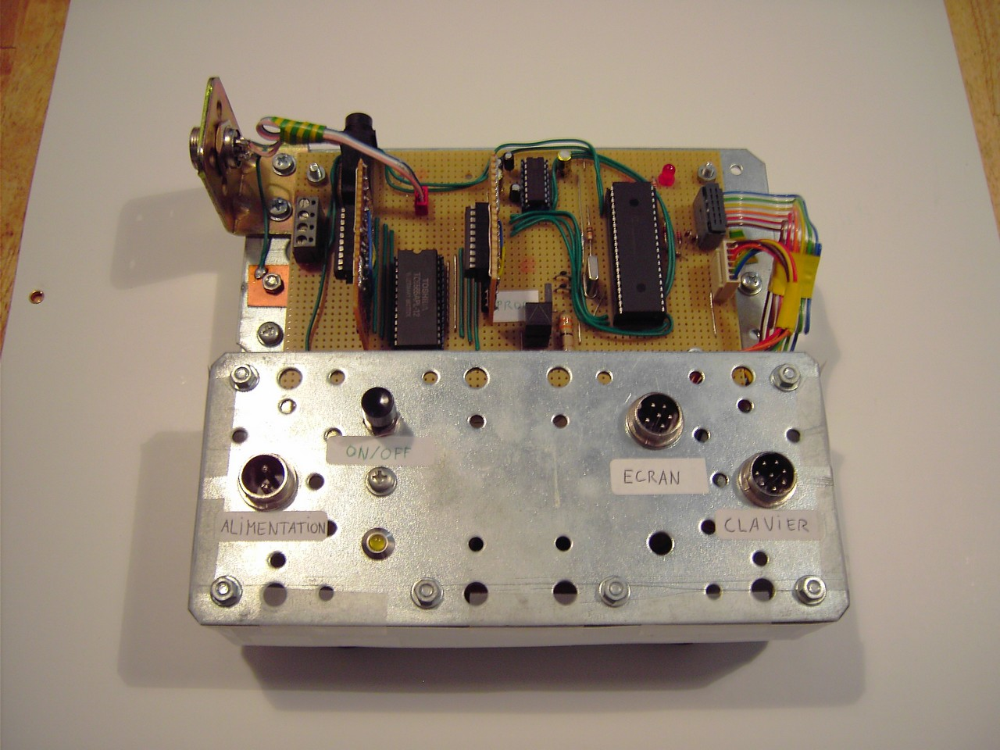
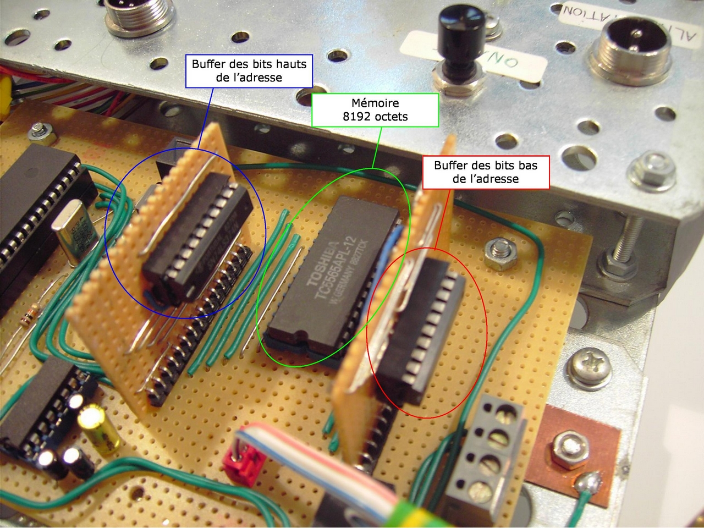
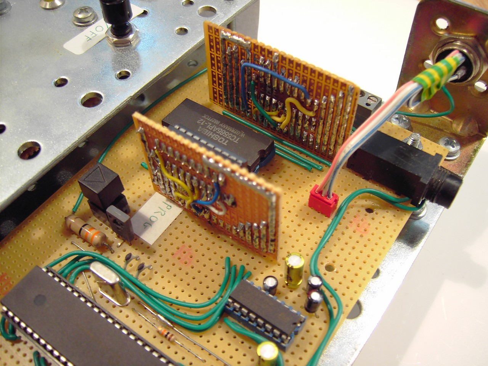

Extension de la RAM du A6
Le A6 est désormais doté d'un mini système d'exploitation lui permettant de charger des programmes à partir du périphérique de stockage de masse et de les exécuter.
Il est aussi possible de programmer directement sur le A6 grâce à un programme qui interprète un langage assembleur inventé pour l'occasion.
Cependant, cet assembleur requiert une grande quantité de mémoire pour pouvoir exécuter efficacement un nombre important d'instructions.
C'est pour cela qu'il m'a fallu rajouter une RAM externe de 8Ko, récupérée sur un vieux magnétoscope hors d'usage.
Voici une vue de la carte mère avec le nouveau module de RAM implanté :

Spécifications
- RAM statique de 8192 octets
- Temps d'accès au module (lecture et écriture) d'environ 20 μs
- Consommation de la puce RAM : 50 mA
- Fonctionnement de la puce en adressant les octets uniquement (pas de paging)
Fonctionnement
Il faut tout d'abord préciser que ce module appelé "RAM" ne correspond pas à de la RAM classique, c'est-à-dire que le processeur ne "voit" pas cette RAM et ne peut pas y accéder automatiquement, comme il le fait avec les 368 octets de RAM embarquée.
On peut considérer ce module comme une mémoire swap très rapide d'accès et qui se comporte comme un tableau d'octets vu d'un langage de programmation.
Plusieurs problèmes se sont posés lors de la création de ce module :
- L'espace restant sur le circuit de la carte mère était assez réduit.
- Le microcontrôleur n'avait pas assez de broches pour piloter la puce de RAM de façon conventionnelle (13 broches pour l'adresse, 8 broches pour les données, 3 broches de contrôle).
Voici la place qui était disponible pour réaliser le circuit :

Et voici le module de RAM implanté sur la carte mère :
Pour réduire l'espace utilisé, il a fallu recourir aux deux circuits verticaux que l'on devine ci-dessous.

{kind=link}
{kind=link}
Méthode retenue
La puce de RAM est reliée à un bus de 8 bits piloté par le microcontrôleur.
Sur ce bus sont aussi connectés deux registres 8 bits provenant d'un vieux PC à base de 486.
Les sorties de ces registres sont câblées sur les lignes d'adresse de la puce de RAM.
Le microntrôleur envoie la partie basse de l'adresse de l'octet à lire ou à écrire au premier registre, puis la partie haute de l'adresse au second registre.
Il ne lui reste plus qu'à configurer la puce de RAM pour effectuer une écriture ou une lecture et à faire transiter les données sur le bus 8 bits.
De cette façon, la vitesse d'accès au module de RAM n'est pas trop affaiblie par rapport à un protocole série.
L'image ci-dessous montre les différents composants du module : 
{kind=link}
Pour terminer, voici une photo montrant "l'arrière" du module : 
Retour au menu des projets{kind=link}